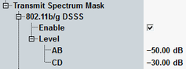
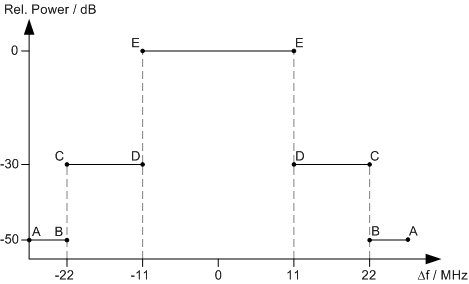

The energy that spills outside the designated radio channel increases the interference with adjacent channels and decreases the system capacity. The amount of unwanted off-carrier energy is assessed by a spectrum measurement.
Limits are defined via a transmit spectrum mask divided into several frequency areas.

The transmit spectrum mask is defined via points connected by horizontal lines. The mask is symmetric relative to the center frequency of the RF analyzer (offset 0 MHz), see figure below. The borders of the areas are fixed as defined by IEEE, with the points A at the edges of the frequency range covered by the measurement.
You can configure a power level limit for the points A/B, and C/D. The limit for points E always equals 0 dB.

The default settings shown in the figure above are specified in IEEE 802.11-2012 , section 16.4.7.5/17.4.7.4 Transmit spectrum mask.